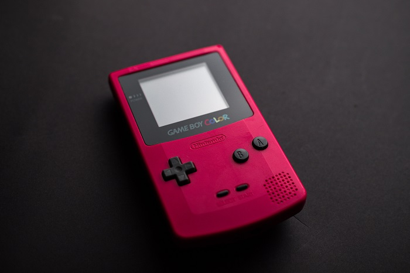
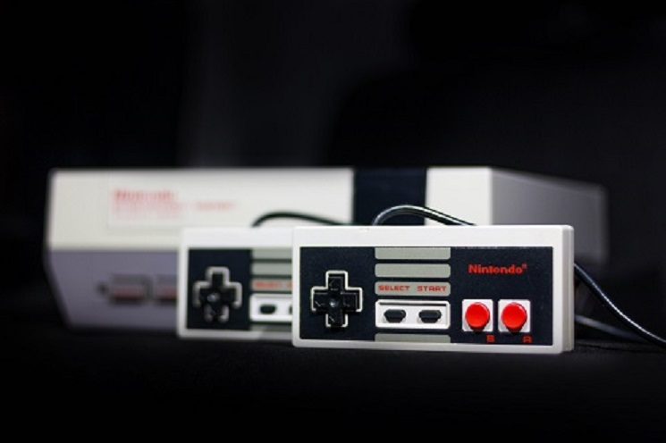

Overview
Purpose
I am very passionate about gameplay and new released games, this is why I am going to create a personal website that will feature upcoming new released games and who their creators are and also the minimum system and requirements it will take to enjoy the games on Pc. Reviewing games give players the crucial info of whats great to play and a waste of gaming time.
Audience
Anyone who enjoy`s good games.
Branding
Website Logo

Style Guide
Color Palette
Palette URL: https://coolors.co/C70707-05134A-F3A712-A8C686-B9BFC1Navigation
Site Map
Welcome All Gamers and Gamers To Be.
Imagine a world where you can have any game you want, any game to play. For most of us it`s not possible that is why we need to share our experience and feelings with each other in a gaming forum that highlights the main points in games which lock yourself into a world of fantasy and believe of the imaginary world of games.
Gaming brings relaxation, fun with a imaginary world of fun and pure enjoyment. Imagine running through the world of Skyrim, driving some of the most fastest cars in the world. Imagine building a civilization and expanding your economy and creating new worlds. Imagine commanding a elite space craft and do anything you like to do with it. Be that biggest sport star to be. That can be if you start to join the world of games.
Alot of games are available and alot will still be develop, however not all of them are loved by all. The preference of each individual towards a game depends on the experience felt by the individual. Games also give the opportunity for us to learn especially strategy games and when you put all your training into it. Research has also shown that games is essential for healthy development. Come and spent time enjoying information on what is the best games to play and what is a waste of time. How to strategize your gameplay and how to up it to your fullest gaming potential.
Images for the Home page

Old School Retro
Explore a world of the genre that started it all from the basic Ping-Pong, Space invaders, Tetris, Super Mario World and more. This genre has capture our minds from the early stages with their unbelievable fun filled pixel art, these changed the world of games from just black and white to colour fun and challenging.
They gave way to the preparation for today`s best genre of games, by laying that Adventurous platform that entrigued the human mind.They created a competetive atmosphere for friends with fun. The ultimate way to communicate with fun in social excitement. In this space we will feature all the good old games that gave the foundation for the new arrivals. Prepare yourself for one great adventure back to the past. An adventure that focus on what tricks there were that you did not knew of a certain retro game that existed. An adventure that focus on playability of the most entrique retro games. An adventure that highlights competetive gameplay at its best for friends and family. An adventure filled with fun and laughter, full of fun and excitement. An adventure that make you want more and more of that adventure.
Never let the fun cease to exist, join us as we discuss and magnify the fun of every retro game there is. Relive those games that has proof fun on whole different level. If it was Super mario, Pacman, Road Runner whatever it may have been, let us create that feeling which brought back those pleasant gaming memories of the 80`s and 90`s.
Images for the Page 2

New and Upcomning
Welcome to the New and Upcoming page where you will discover the latest forum discussions on the latest new released titles.
Today games have reached that platform where it is known as video games, yes that`s correct and has gain the ability to tell a story as though you are watching a movie. Some of those games has reached a simulator level where you, drive a car, fly a plane as though you are doing it in real life.
Truth be told, you can actually do anything imaginary on a video game today. Most of the new releases focuses on graphics on game playability. Even if a game doesn`t wind up landing every punch, I imagine that its constant surprises will be enough to keep me interested in its promising fullfillment. I`ll take some creative swings from a studio over that has a great genre piece any time. Some of those creative swings, almost all of them has online gaming available, which in turn makes it more worthwhile to play.
There are a few games that turned heads when it came to graphics and performance. Here are three of those games:
Hogwarts Legacy
Even better, though, is the world itself, it is just packed with nearly everything I wanted in a Potter game and more. You`ll find yourself exploring Hogwarts stone-cobbled halls and secret passageways, you can fly around the Forbidden Forest on a broomstick, and explore dark caves lit only by the glow of your Lumos spell. The game brilliantly captured the look and feel of the Wizarding World of Hogwarts that amazed me , no matter what trivial errand they had me wrapped up in.
Deadspace Remake
One of the best horror games, that ive played this far with jaw dropping graphics and out of this world story line. Gameplay is intense and can be be set in the options menu to suite you level. Deadspace remake takes you into a dark space sci-fi environment with creatures that jumps out of nowhere to give you the chills and fright your life. If you are talking about action, this is the game for you.
Forspoken
In this game you play a role of a young lady called Frey who gets into trouble, lands in a building picks up a armband and gets transported to an other dimension where she recieve superpowers and magic and has to face titans. She tries to find a portal to return her back to her world, but in the process needs to endure setbacks and alot of enemies and friends and also looses one friend who dies. She continues on her journey and improves her powers and continues to defeat enemies. Overall this is one great adventure, action game. Gameplay is astonishing and the graphics is tremendous.


Wireframes
Create three wireframes for your site. One for each page and list them here
Home
Old school Retro

New and Upcoming